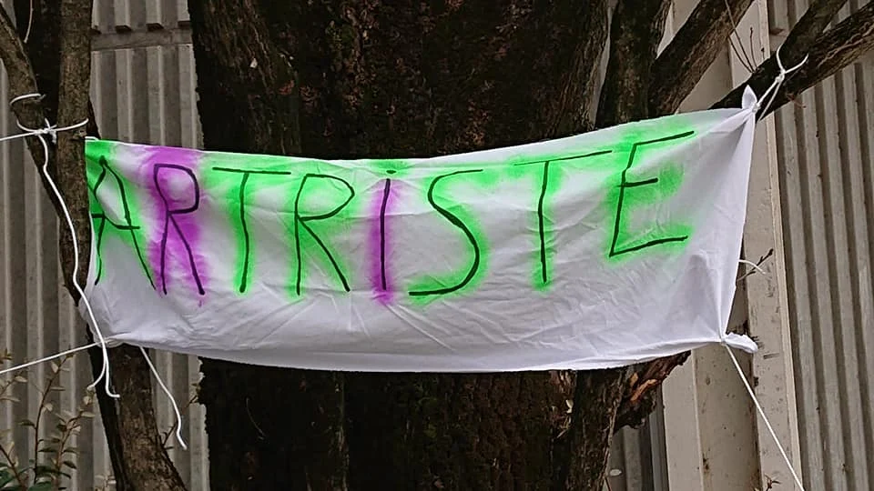

Reportage photo
L’agora des travailleurs du spectacle au Moulin du Roc, en photos
Date indiquée par Facebook · 12 mars 2021
Repères éditoriaux
En mars 2021, les travailleurs du spectacle qui occupaient le Moulin du Roc à Niort annonçaient une agora publique tous les jours à 15 h. Les photos et la vidéo sont deux publications de la même journée.
Texte conservé avec la publication
A Niort, les travailleur-euse-s du spectacle occupent le Moulin du Roc !
Agora publique tous les jours à 15 heures. Moment de rencontre et de débat.

Sources
Archive rouge · export Facebook · AR-0002-FB-02055
À lire aussi · L’occupation du Moulin du Roc, en vidéo